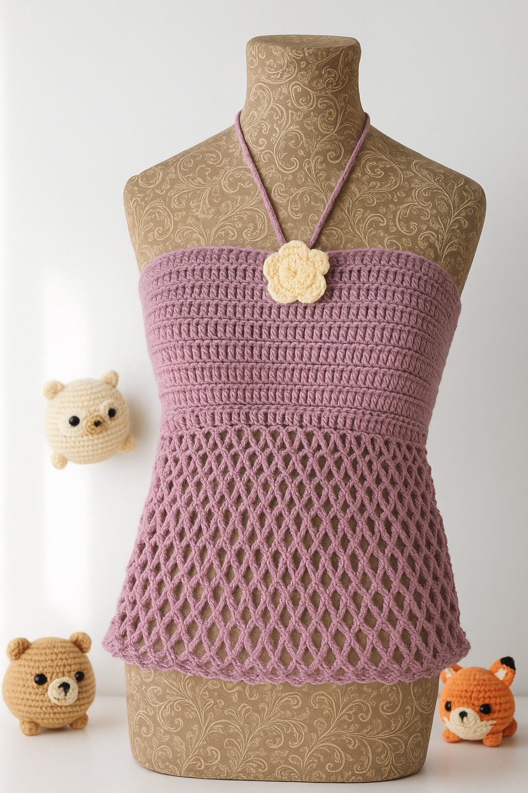

Netted Tank Top Pattern
This pattern is about a medium but it has a corset in the back so
the size is adjustable.

Materials: 2 Yarn colors: one main color and one color for the rose,
Crochet Hook, Skissors, Lardge Sewing Needle.
Notes: The string for the corset in the back will depend on how you want it to fit.
You will make it as long or as short as you want. The same will be for the neck strap.
You will measure yourself to see how long or short you want it.
Stitches: Chain = (CH), Single Crochet = (SC), Double Crochet = (DC), Slip Stitch = (SLST).
Now all you have to do is.
Back to Main Page
Please do not copy this pattern, sell this pattern, or call it your own. You can make it yourself and sell it
or reference the website. If you have any questions, please feel free to contact me.